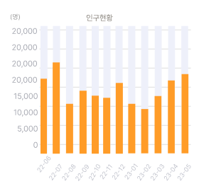

전체메뉴
농촌공간 진단 시스템
일반현황
23
자연지리환경
인문환경
토지 이용환경
산업경제 현황
지역을 클릭하면 해당지역 증감현황을 볼 수 있습니다.
충청북도 진천군
인구이동
인구 분포도
전출입 인구이동
진입인구 현황
0%
100%
충청북도
진천군
55,159
최근 1년간 주중 일평균 유입인구수입니다.
주중
주말

생활인구 이동
인구이동 중심지 분석
인구분포 집중화 분석
농촌공간
핵심시설 분포도
핵심시설 서비스권역
핵심권역 접근성
응급시설 접근성
생활서비스
생활서비스(복지)진단
생활서비스(문화)진단
생활서비스(보육)진단
생활서비스(체육)진단
생활서비스(휴게편의)진단
농촌 재생 계획모의
복지계획
23
문화계획
보육계획
체육계획
휴게편의
농촌 공간 재구조화 계획모의
설정
로그아웃
인쇄하기
초기화
전체보기
거리
면적
반경
도형그리기
분할없음
일반
위성
없음
로드뷰
확대
축소
응급의료시설 5분 접근영역
응급의료시설 10분 접근영역
응급의료시설 30분 접근영역